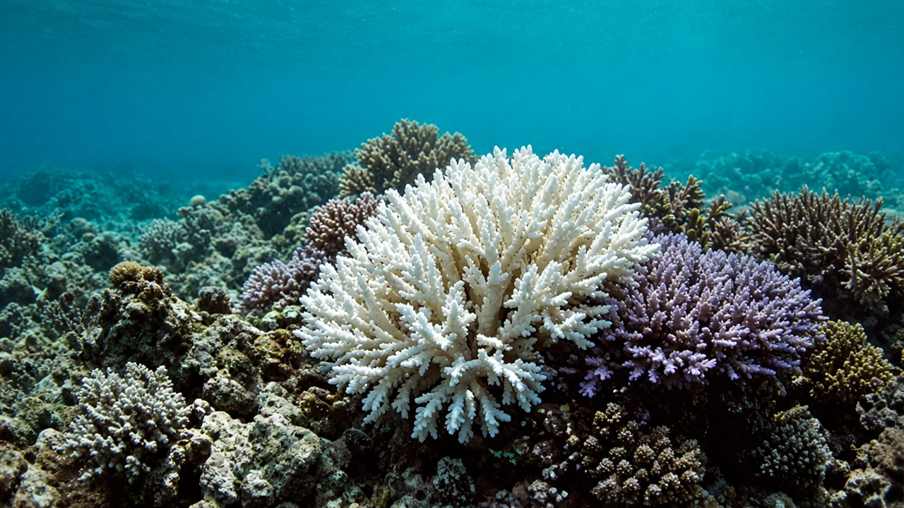
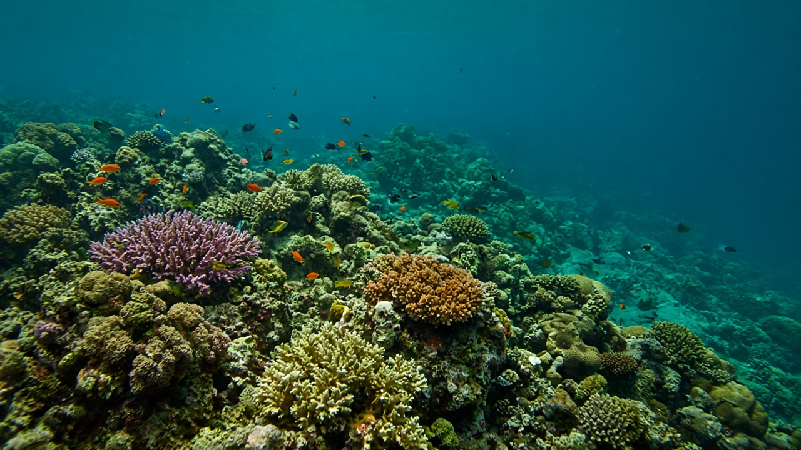

Ocean Warming & Acidification
Published on July 15, 2026
Oceans absorb more than ninety percent of the excess heat trapped by greenhouse gases, making ocean warming a central—but often invisible—dimension of climate change. Rising sea-surface and deep-ocean temperatures affect marine ecosystems, shift fish distribution, fuel stronger hurricanes, and contribute to thermal expansion that raises sea levels. Marine heatwaves, prolonged periods of unusually warm water, have caused mass coral bleaching, kelp forest collapse, and disruptions to fisheries on every continent with a coastline.
Ocean acidification is a chemical consequence of increased atmospheric CO₂. When carbon dioxide dissolves in seawater, it forms carbonic acid, lowering pH and reducing the availability of carbonate ions that shell-forming organisms such as corals, mollusks, and certain plankton need to build skeletons and shells. Acidification progresses gradually but inexorably with emissions, and its effects compound the stress organisms already face from warming, pollution, and overfishing. Long-term monitoring stations document declining pH in open ocean waters, confirming trends predicted by carbon cycle science decades ago. Polar and upwelling regions experience acidification faster, threatening food webs that support commercial fisheries and coastal communities.
Oceans also play a vital role in the carbon cycle, absorbing roughly a quarter of anthropogenic CO₂ emissions annually, though this service may weaken as waters warm and circulation patterns shift. Protecting marine ecosystems through sustainable fishing, pollution control, and marine protected areas builds resilience even as global chemistry changes. Coastal nations and island states depend on healthy fisheries and coral reefs for food security and tourism revenue. For landlocked nations, ocean health still matters through climate regulation, global food systems, and the shared responsibility to reduce emissions that drive both warming and acidification. Healthy oceans are essential to a stable climate and to the livelihoods of billions who depend on marine resources.

समुद्रले ग्रीनहाउस ग्यासले फसेको अतिरिक्त तापको नब्बे प्रतिशत भन्दा बढी सोस्छ, जसले समुद्री तापक्रम वृद्धिलाई जलवायु परिवर्तनको केन्द्रीय तर प्रायः अदृश्य आयाम बनाउँछ। बढ्दो समुद्री सतह र गहिरो समुद्रको तापक्रमले समुद्री पारिस्थितिकी तन्त्र, माछा वितरण, बलियो आँधी र समुद्री सतह बढाउने तापीय विस्तारलाई प्रभाव पार्छ। समुद्री अत्यधिक गर्मीको लहर, असामान्य रूपमा तातो पानीको लामो अवधि, ले प्रवालको व्यापक रङहराउने, समुद्री घास वनको ढल्ने र हरेक तटवर्ती महाद्वीपमा माछा पालन व्यवस्थामा व्यवधान निम्त्याएको छ।
समुद्री अम्लीकरण वातावरणमा बढेको CO₂ को रासायनिक परिणाम हो। कार्बन डाइअक्साइड समुद्री पानीमा घुल्दा कार्बोनिक अम्ल बन्छ, pH घट्छ र कार्बोनेट आयन को उपलब्धता कम हुन्छ, जुन शंख, सीप र केही सूक्ष्मजीव जस्ता खोल बनाउने जीवहरूलाई कंकाल र खोल बनाउन चाहिन्छ। उत्सर्जनसँगै अम्लीकरण क्रमशः तर अनिवार्य रूपमा बढ्छ, र यसको प्रभावले तापक्रम वृद्धि, प्रदूषण र अत्यधिक माछा शिकार बाट पहिले नै दबाबमा रहेका जीवहरूमा थप दबाब थप्छ। दीर्घकालीन निगरानी केन्द्रहरूले खुला समुद्रमा pH घट्दो देखाउँछ, दशकअघि कार्बन चक्र विज्ञानले भविष्यवाणी गरेको प्रवृत्ति पुष्टि गर्दै। ध्रुवीय र उत्थान क्षेत्रमा अम्लीकरण छिटो हुन्छ, व्यावसायिक माछा पालन र तटीय समुदायलाई सहारा दिने खाद्य श्रृंखलालाई खतरा निम्त्याउँदै।
समुद्रले कार्बन चक्रमा महत्त्वपूर्ण भूमिका खेल्छ, वार्षिक रूपमा मानव-जन्य CO₂ उत्सर्जनको लगभग एक चौथाई सोस्छ, यद्यपि पानी तात्दै र परिसंचरण ढाँचा बदल्दा यो सेवा कमजोर हुन सक्छ। दिगो माछा पालन, प्रदूषण नियन्त्रण र समुद्री संरक्षित क्षेत्रमार्फत समुद्री पारिस्थितिकी तन्त्र संरक्षणले विश्वव्यापी रसायन परिवर्तन हुँदा पनि लचिलोपन बढाउँछ। तटीय राष्ट्र र टापु राज्यहरू खाद्य सुरक्षा र पर्यटन आम्दानीका लागि स्वस्थ माछा पालन र प्रवाल भित्तामा निर्भर छन्। भू-बद्ध राष्ट्रहरूका लागि पनि समुद्रको स्वास्थ्य जलवायु नियमन, विश्वव्यापी खाद्य प्रणाली र तापक्रम वृद्धि र अम्लीकरण दुवै चलाउने उत्सर्जन घटाउने साझा जिम्मेवारीमार्फत महत्त्वपूर्ण छ। स्वस्थ समुद्र स्थिर जलवायु र समुद्री स्रोतमा निर्भर अर्बौं मानिसहरूको जीविकोपार्जनका लागि अत्यावश्यक छ।

समुद्र ग्रीनहाउस गैसों द्वारा फँसी अतिरिक्त गर्मी का नब्बे प्रतिशत से अधिक अवशोषित करते हैं, जिससे समुद्री ताप वृद्धि जलवायु परिवर्तन का केंद्रीय लेकिन अक्सर अदृश्य आयाम बन जाती है। बढ़ते समुद्री सतह और गहरे समुद्र के तापमान समुद्री पारिस्थितिकी तंत्र, मछली वितरण, मजबूत तूफान और समुद्र स्तर बढ़ाने वाले तापीय विस्तार को प्रभावित करते हैं। समुद्री अत्यधिक गर्मी की लहर, असामान्य रूप से गर्म पानी की लंबी अवधि, ने प्रवाल का व्यापक रंगहीन होना, समुद्री घास वन का ढहना और हर तटवर्ती महाद्वीप में मत्स्य पालन में व्यवधान पैदा किए हैं।
समुद्री अम्लीकरण वायुमंडल में बढ़े CO₂ का रासायनिक परिणाम है। कार्बन डाइऑक्साइड समुद्री पानी में घुलने पर कार्बोनिक अम्ल बनता है, pH घटता है और कार्बोनेट आयन की उपलब्धता कम होती है, जो प्रवाल, शंख-सीप और कुछ सूक्ष्मजीव जैसे खोल बनाने वाले जीवों को कंकाल और खोल बनाने के लिए चाहिए। उत्सर्जन के साथ अम्लीकरण धीरे-धीरे लेकिन अनिवार्य रूप से बढ़ता है, और इसका प्रभाव गर्मी, प्रदूषण और अत्यधिक मत्स्य शिकार से पहले से दबाव में जीवों पर और दबाव डालता है। दीर्घकालिक निगरानी केन्द्र खुले समुद्र में pH घटते दिखाते हैं, दशकों पहले कार्बन चक्र विज्ञान द्वारा भविष्यवाणी के रुझान की पुष्टि करते हैं। ध्रुवीय और उत्थान क्षेत्रों में अम्लीकरण तेज होता है, व्यावसायिक मत्स्य पालन और तटीय समुदायों को सहारा देने वाले खाद्य जाल को खतरे में डालता है।
समुद्र कार्बन चक्र में महत्वपूर्ण भूमिका निभाते हैं, प्रतिवर्ष मानव-जन्य CO₂ उत्सर्जन का लगभग एक चौथाई अवशोषित करते हैं, हालाँकि पानी गर्म होने और परिसंचरण पैटर्न बदलने पर यह सेवा कमजोर हो सकती है। टिकाऊ मत्स्य पालन, प्रदूषण नियंत्रण और समुद्री संरक्षित क्षेत्रों के माध्यम से समुद्री पारिस्थितिकी तंत्र की रक्षा वैश्विक रसायन परिवर्तन के बावजूद लचीलापन बढ़ाती है। तटीय राष्ट्र और द्वीप राज्य खाद्य सुरक्षा और पर्यटन आय के लिए स्वस्थ मत्स्य पालन और प्रवाल भित्तियों पर निर्भर हैं। स्थल-रुद्ध राष्ट्रों के लिए भी समुद्र का स्वास्थ्य जलवायु नियमन, वैश्विक खाद्य प्रणाली और गर्मी और अम्लीकरण दोनों को चलाने वाले उत्सर्जन कम करने की साझा जिम्मेदारी के माध्यम से महत्वपूर्ण है। स्वस्थ समुद्र स्थिर जलवायु और समुद्री संसाधनों पर निर्भर अरबों लोगों की आजीविका के लिए आवश्यक हैं।